HOGWARTS SCHOOL OF WITCHCRAFT AND WIZARDRY
호그와트 기숙사 컵 사용자 가이드Hogwarts House Cup User Guide
비판적 사고 퀴즈 «House Cup»의 참가자 화면과 관리자 화면 사용법을 화면 이미지와 함께 설명합니다.
How to use the player and admin screens of the «House Cup» critical-thinking quiz, with screenshots.
참가자는 문제마다 정답과 함께 확신도를 걸고, 그 점수가 기숙사 점수로 모입니다.
For every question, players pick an answer and bet a confidence level. Their points add up to their House’s score.
1. 한눈에 보기1. Overview
화면은 참가자 화면과 관리자 화면 두 가지입니다. 참가자가 답을 낼 때마다 점수가 바로 저장되고, 모든 화면의 점수와 순위가 새로고침 없이 함께 바뀝니다.
There are two screens: the player screen and the admin screen. Each answer is saved the moment it is submitted, and scores and rankings update on every screen without reloading.
접속 주소Addresses
| 화면 | 주소 | 누가 쓰나요 |
|---|---|---|
| 참가자 화면 | https://ucanon.com/jmp/hogwarts/ | 학생. 로그인 없이 바로 참여 |
| 관리자 화면 | https://ucanon.com/jmp/hogwarts/admin.html | 등록된 관리자. Google 계정으로 로그인 |
| Screen | Address | Who uses it |
|---|---|---|
| Player screen | https://ucanon.com/jmp/hogwarts/ | Students. No sign-in needed |
| Admin screen | https://ucanon.com/jmp/hogwarts/admin.html | Registered admins. Sign in with Google |
두 화면은 서로 이어져 있습니다. 관리자 화면 오른쪽 위 퀴즈 화면을 누르면 참가자 화면으로, 참가자 화면 오른쪽 위 관리자를 누르면 관리자 화면으로 갑니다. 참가자 화면의 도움말을 누르면 이 가이드가 열립니다.
The screens link to each other. 퀴즈 화면 (Quiz) at the top right of the admin screen opens the player screen, and Admin on the player screen opens the admin screen. Help on the player screen opens this guide.
진행 순서How a session runs
점수 규칙Scoring rules
문제마다 정답을 고르고, 그 답이 맞을 확률을 다섯 단계 중 하나로 고릅니다. 맞히면 확신도만큼 얻고, 틀리면 확신도만큼 잃습니다.
For each question, pick an answer and one of five confidence levels for how likely it is to be right. A correct answer earns that many points. A wrong answer loses the same amount.
| 확신도Confidence | 정답일 때If correct | 오답일 때If wrong | 이럴 때 고르세요Choose it when |
|---|---|---|---|
| 95% | +95 | −95 | 거의 확실할 때You are nearly certain |
| 75% | +75 | −75 | 꽤 자신 있을 때You are fairly sure |
| 60% | +60 | −60 | 조금 더 맞을 것 같을 때It is slightly more likely right than wrong |
| 45% | +45 | −45 | 반반에 가까울 때It feels close to a coin flip |
| 30% | +30 | −30 | 거의 모를 때You are mostly guessing |
기숙사 점수는 그 기숙사를 고른 참가자들의 개인 점수를 모두 더한 값입니다. 무작정 높은 확신도를 고르기보다 자기 실력을 정확히 가늠하는 것이 기숙사에 유리합니다.
A House’s score is the sum of its players’ personal scores. Judging your own certainty accurately helps your House more than always betting high.
2. 참가자 화면2. Player screens
학생이 쓰는 화면입니다. 로그인 없이 이름과 기숙사만 고르면 바로 시작합니다.
This is the screen students use. There is no sign-in: choose a name and a House and start.
첫 화면(안내 카드)Home (welcome cards)
첫 화면은 카드 두 장으로 대회를 소개합니다. 다음과 ← 이전으로 넘기고, 아래 점은 몇 번째 카드인지 보여 줍니다. 대연회장처럼 촛불이 떠다닙니다.
The home screen introduces the contest in two cards. Use Next and ← Back to flip through them, and the dots show which card you are on. Candles float in the background, as in the Great Hall.

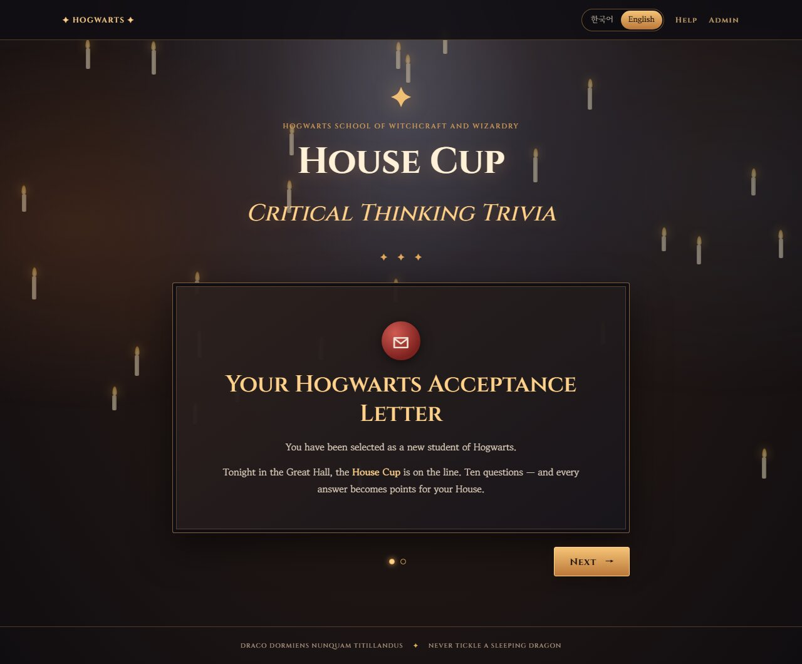
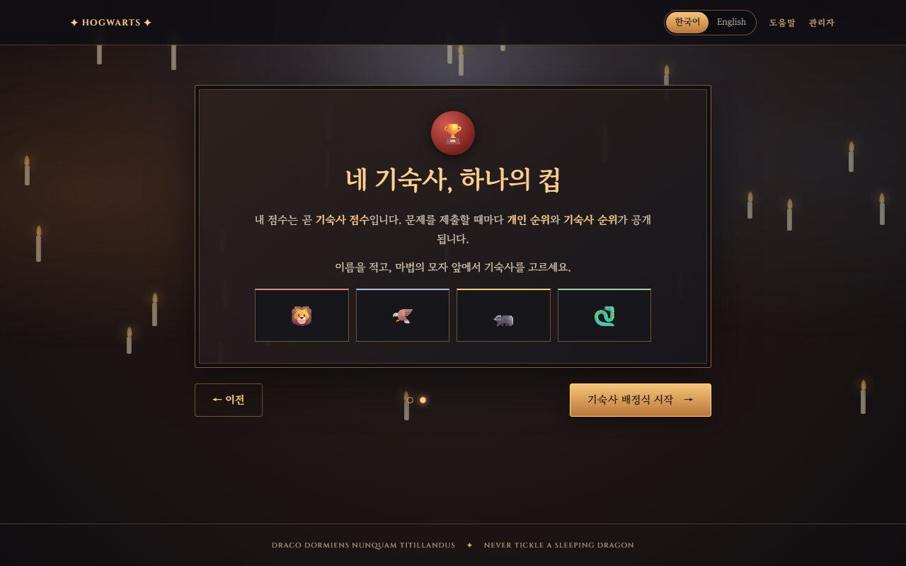
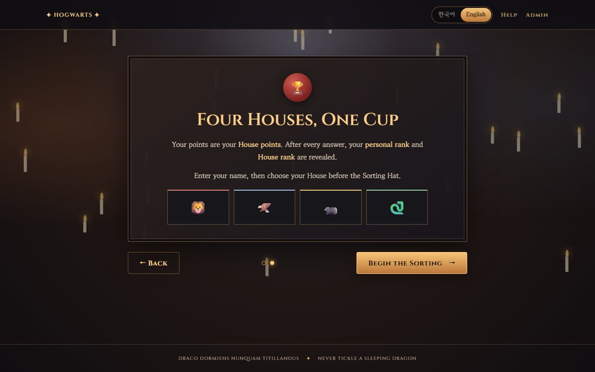
이름 입력Enter your name
순위표에 보일 이름을 30자 이내로 입력하고 계속을 누릅니다. 이름은 다른 참가자에게도 보이므로 별명이나 이름만 쓰는 것이 좋습니다.
Type the name to show in the rankings (up to 30 characters) and press Continue. Other players can see it, so a first name or nickname is best.

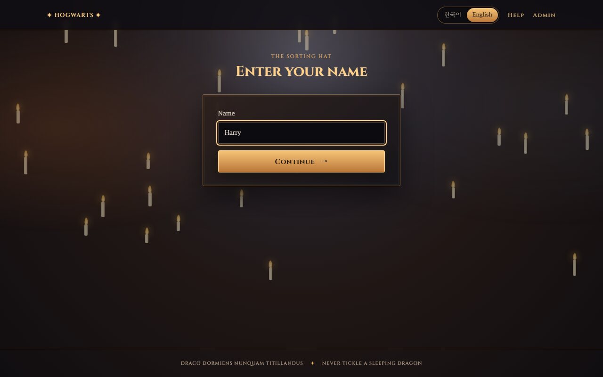
기숙사 선택Choose a House
네 기숙사의 특징을 읽고 대표할 기숙사를 누릅니다. 누르는 즉시 첫 문제로 넘어갑니다.
Read about the four Houses and press the one you want to represent. The first question opens right away.

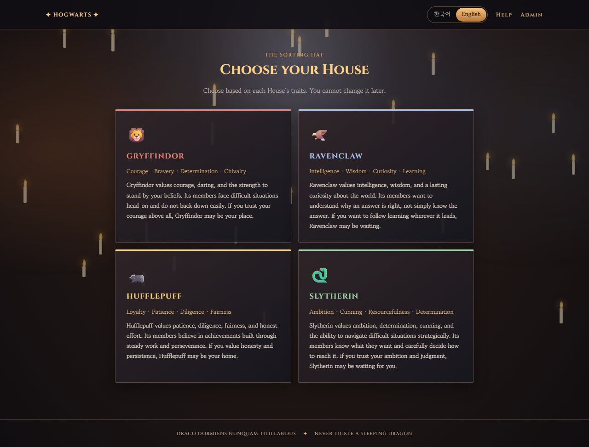
규칙 카드와 판돈 체험Rule cards and stake practice
기숙사를 고르면 문제 전에 규칙 카드 두 장이 나옵니다. 처음 한 번만 보여 주며, 마지막 카드의 문제 풀기 시작을 누르면 1번 문제로 갑니다.
After choosing a House, two rule cards appear before the questions. They show once, and Start the Quiz on the last card opens question 1.
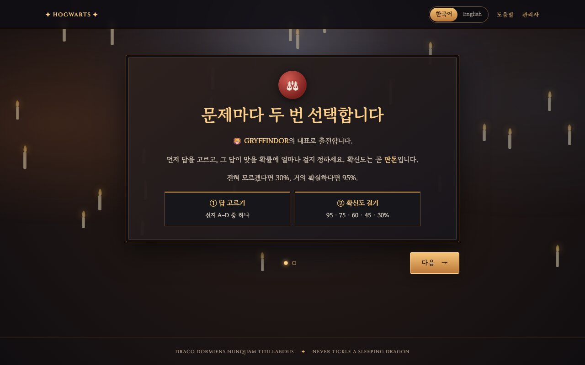
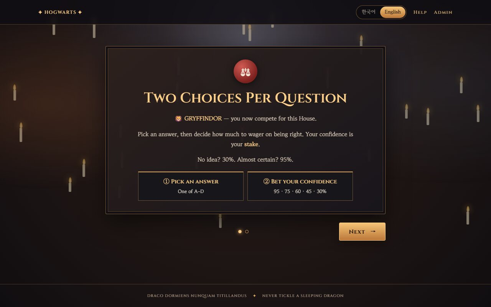
두 번째 카드에서는 직접 걸어 보며 규칙을 익힙니다. 왼쪽 빨간 막대는 틀렸을 때 잃는 점수, 오른쪽 금색 막대는 맞혔을 때 얻는 점수입니다. 줄을 눌러 판돈을 고르고 맞았다 ✓·틀렸다 ✗를 누르면 점수가 어떻게 바뀌는지 보입니다. 이 체험 점수는 저장되지 않습니다.
The second card lets players try it out. Red bars on the left show what a wrong answer costs, and gold bars on the right show what a right answer earns. Tap a row to choose a stake, then Right ✓ or Wrong ✗ to watch the score change. This practice score is not saved.
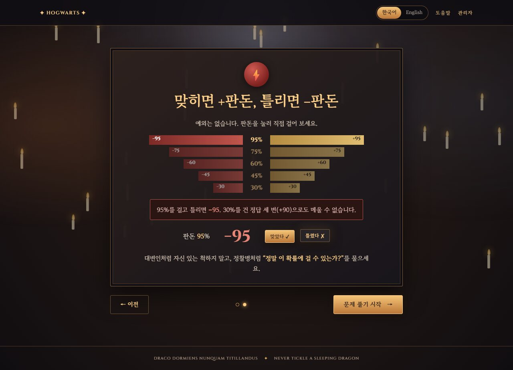
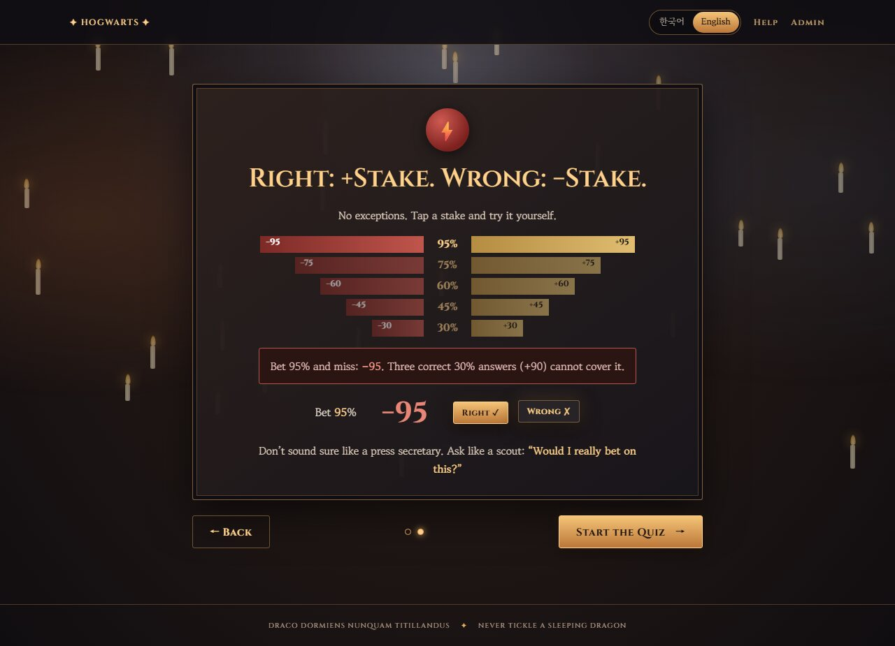
문제 화면 구성Question screen
문제 화면 위쪽에는 진행 상황과 점수가 늘 보입니다.
Progress and scores stay visible at the top of every question.

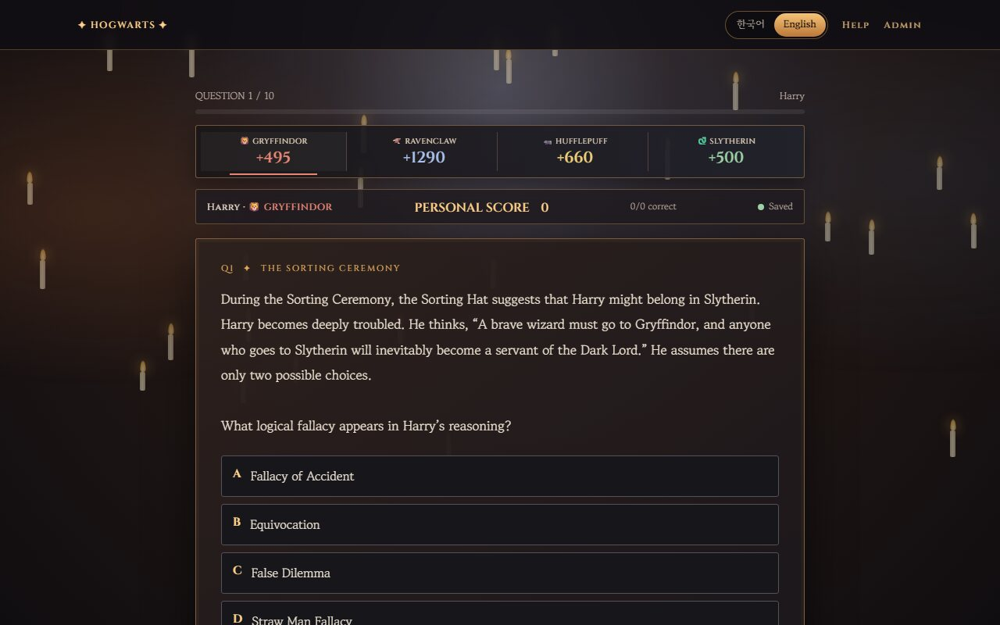
| 영역 | 설명 |
|---|---|
| 진행 막대 | 몇 번째 문제인지(예: 문제 1 / 10)와 진행 정도를 보여 줍니다. |
| 기숙사 점수 띠 | 네 기숙사의 현재 점수입니다. 내 기숙사 칸 아래에 색 밑줄이 있고, 다른 참가자가 답을 내면 바로 바뀌며 바뀐 숫자가 살짝 커졌다 돌아옵니다. |
| 개인 점수 띠 | 내 이름·기숙사, 개인 점수, 맞힌 수, 현재 순위를 보여 줍니다. |
| 저장 상태 | 초록 점과 저장됨이면 지금까지의 답이 모두 저장된 상태입니다. 제출 중에는 저장 중, 문제가 생기면 빨간 점과 저장 실패가 보입니다. |
| Area | What it shows |
|---|---|
| Progress bar | Which question you are on (for example, QUESTION 1 / 10) and how far along you are. |
| House score strip | The current score of all four Houses. Your House has a colored underline. It changes as soon as anyone answers, and a changed number briefly pulses. |
| Personal score strip | Your name and House, personal score, number correct, and current rank. |
| Save status | A green dot with Saved means every answer so far is stored. Saving shows while submitting, and a red dot with Save failed means something went wrong. |
답과 확신도 고르기Answer and confidence
- 문제를 읽고 A~D 중 답을 하나 누릅니다. 고른 답은 금색 테두리로 표시됩니다.
- 정답 확신도에서 다섯 단계 중 하나를 누릅니다. 각 버튼 아래에 얻거나 잃는 점수가 적혀 있습니다.
- 답과 확신도를 모두 고르면 답안 제출 버튼이 켜집니다. 누르면 바로 저장됩니다.
- Read the question and press one answer, A to D. Your choice gets a gold border.
- Under HOW CONFIDENT ARE YOU?, press one of the five levels. Each button shows the points you win or lose.
- Once both are chosen, Submit Answer becomes active. Pressing it saves the answer immediately.

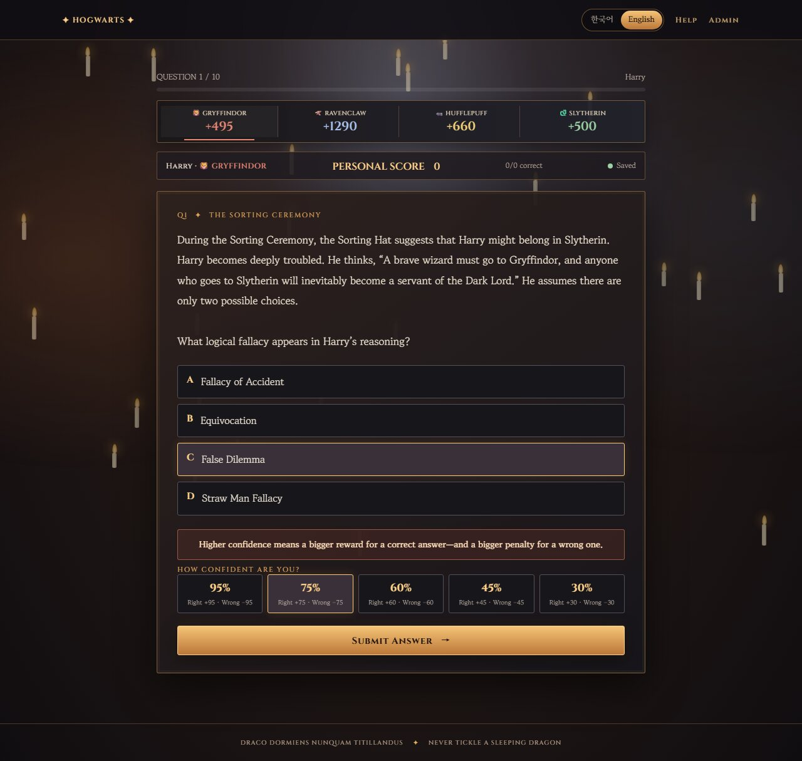
문항별 결과와 순위판Result and rank board
제출하면 얻거나 잃은 점수가 크게 나타납니다. 맞히면 금색으로 커지고, 틀리면 빨간색으로 흔들립니다. 75% 이상을 걸고 틀리면 “확신도 ○○%의 대가입니다.”가 덧붙습니다.
After submitting, the points won or lost appear in large type: gold and growing for a correct answer, red and shaking for a wrong one. A miss at 75% or higher adds “The price of ○○% confidence.”
- 내 개인 순위 / 우리 기숙사 순위: 전체 인원 중 몇 위인지와, 직전 문제보다 오르면 ▲, 내리면 ▼, 그대로면 –를 보여 줍니다.
- 추격 점수: 바로 위 순위까지 몇 점이 남았는지, 1위라면 2위와 몇 점 차이인지 알려 줍니다. 기숙사도 같은 방식입니다.
- 기숙사 대항전: 네 기숙사를 메달(🥇🥈🥉)과 막대로 비교합니다. 내 기숙사 줄이 강조됩니다.
- 개인 순위 TOP 5: 상위 다섯 명과, 내가 5위 밖이면 내 줄을 따로 보여 줍니다.
- 다른 참가자가 답을 내면 순위판이 바로 바뀝니다.
- YOUR RANK / YOUR HOUSE: your place out of all players, with ▲ if you rose since the last question, ▼ if you fell, or – if unchanged.
- Chase line: how many points to the next rank, or your lead if you are first. The same is shown for your House.
- HOUSE CUP STANDINGS: the four Houses with medals (🥇🥈🥉) and bars. Your House is highlighted.
- TOP 5: the top five players, plus your own row if you are outside the top five.
- The board updates as soon as anyone else answers.

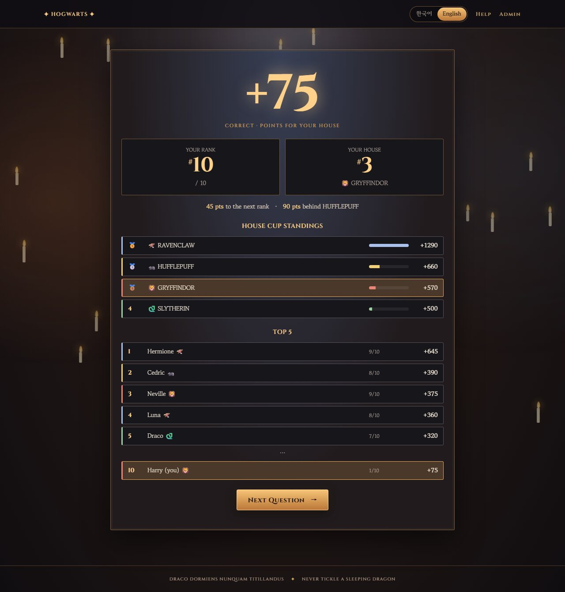

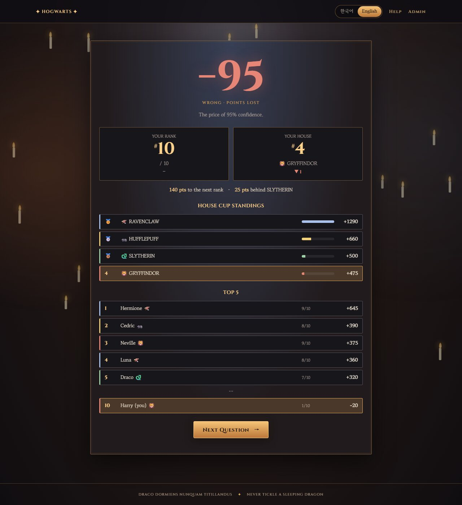
다음 문제를 누르면 이어서 풉니다. 마지막 문제 뒤에는 버튼이 결과 보기로 바뀝니다.
Press Next Question to continue. After the last question the button becomes See Results.
최종 결과Final results
10문항을 모두 풀면 최종 결과가 나옵니다. 개인 누적 점수와 순위, 기숙사 점수, 전체 참가자 순위를 보여 줍니다. 정답표는 보여 주지 않습니다. 다른 참가자가 계속 풀고 있으면 기숙사 점수와 순위는 이 화면에서도 계속 바뀝니다.
After all 10 questions you see your final results: total and rank, House scores, and the full ranking. The answer key is not shown. While others are still playing, House scores and rankings keep updating here too.

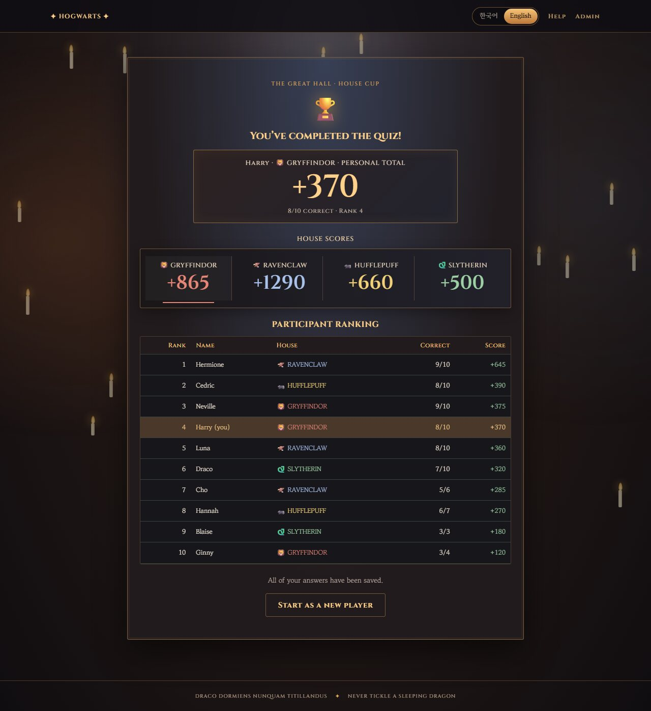
언어 바꾸기Switching language
오른쪽 위 한국어 · English에서 원하는 언어를 누릅니다. 지금 선택된 언어가 금색 바탕으로 표시되며, 문제·선택지·안내가 모두 바뀝니다. 고른 언어는 다음에 들어와도 유지되고, 이 가이드도 같은 언어로 열립니다. 언어를 바꿔도 푼 기록과 점수는 그대로입니다.
Use 한국어 · English at the top right. The selected language has a gold background, and questions, choices, and instructions all switch. Your choice is remembered next time, and this guide opens in the same language. Switching never affects answers or scores.

이어서 풀기와 새 참가자Continue or start as a new player
풀던 도중 창을 닫았다가 다시 들어오면 풀던 문제부터 바로 이어집니다. 왼쪽 위 ✦ HOGWARTS ✦ 로고를 누르면 첫 화면으로 가며, 여기서 두 가지를 고를 수 있습니다.
If you close the page mid-quiz and come back, you continue from the question you were on. The ✦ HOGWARTS ✦ logo at the top left returns to the home screen, which offers two choices.

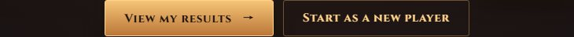
- 이어서 풀기 / 내 결과 보기: 내 기록으로 돌아갑니다.
- 새 참가자로 시작: 한 기기를 여러 학생이 돌려 쓸 때 사용합니다. 앞사람 기록은 그대로 저장되어 있고, 새 이름으로 처음부터 시작합니다.
- Continue / View my results: go back to your own record.
- Start as a new player: for sharing one device between students. The previous record stays saved, and the next student starts fresh with a new name.
휴대폰에서On a phone
휴대폰에서도 같은 주소로 들어오면 화면이 폭에 맞게 정리됩니다. 기숙사 점수는 상징(🦁🦅🦡🐍)과 색으로 구분하고, 확신도 다섯 개는 한 줄에 나란히 보입니다. 답안 제출과 다음 문제 버튼은 화면 아래에 붙어 있어 스크롤하지 않고 바로 누를 수 있습니다.
The same address works on phones, and the layout fits the screen. House scores are shown by crest (🦁🦅🦡🐍) and color, and all five confidence levels fit on one row. Submit Answer and Next Question stay pinned to the bottom of the screen, so you never need to scroll to reach them.


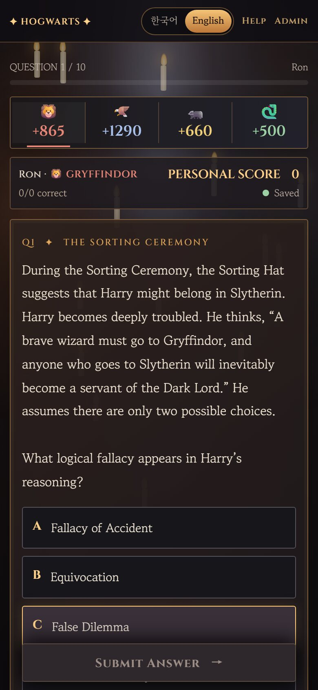
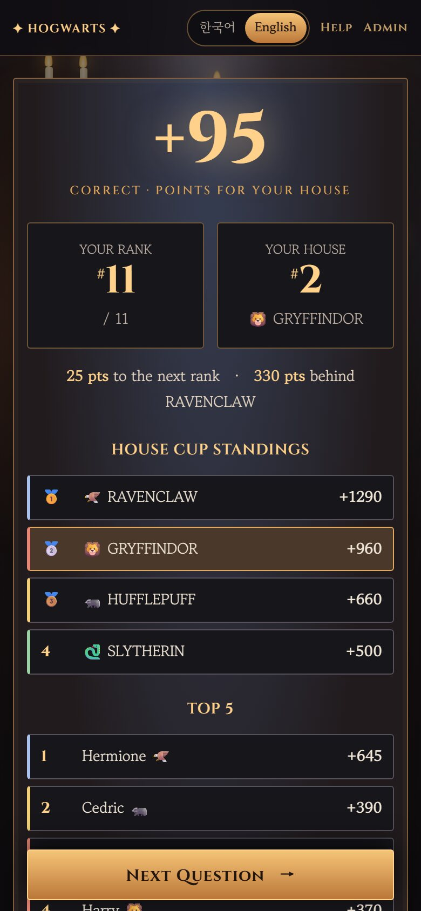
3. 관리자 화면3. Admin screens
진행자가 실시간 결과를 보고 기록을 관리하는 화면입니다. 그래프와 표는 답안이 들어올 때마다 자동으로 다시 계산되므로 새로고침할 필요가 없습니다.
The organizer’s screen for live results and record keeping. Charts and tables recalculate automatically as answers arrive, so there is no need to reload.
접속과 로그인Signing in
- 관리자 화면에 들어갑니다.
- Google 계정으로 로그인을 누르고, 뜨는 창에서 관리자로 등록된 Google 계정을 고릅니다.
- 로그인되면 바로 대시보드가 열립니다. 한 번 로그인하면 같은 브라우저에서는 다음에도 로그인이 유지됩니다.
- Open the admin screen.
- Press Google 계정으로 로그인 (Sign in with Google) and choose the Google account registered as an admin.
- The dashboard opens once you are signed in. The same browser stays signed in next time.

권한이 없을 때No permission
관리자로 등록되지 않은 Google 계정으로 로그인하면 아래 화면이 나옵니다. 다른 계정으로 로그인을 눌러 등록된 계정으로 다시 로그인합니다. 관리자 추가는 Firebase 콘솔의 admins 컬렉션에서 합니다(4장 참고).
Signing in with an unregistered Google account shows this screen (권한이 없습니다, No permission). Press 다른 계정으로 로그인 (Sign in with another account) and use a registered one. Admins are added in the admins collection in the Firebase console (see chapter 4).

상단 막대와 게임 IDTop bar and game ID

| 항목 | 설명 |
|---|---|
| 게임 ID | 지금 보고 있는 회차입니다. 기본값은 house-cup-2026입니다. 다른 회차를 보려면 ID를 입력하고 이동을 누릅니다. |
| 실시간 표시 | 초록 점과 실시간 · 시각이 보이면 연결된 상태이며, 시각은 마지막으로 데이터가 바뀐 때입니다. 빨간 점이면 연결이 끊긴 것이니 새로고침합니다. |
| 계정·로그아웃 | 로그인한 관리자 계정과 로그아웃 버튼입니다. |
| Item | What it does |
|---|---|
| 게임 ID (Game ID) | The session you are viewing. The default is house-cup-2026. To view another, type its ID and press 이동 (Go). |
| 실시간 (Live) | A green dot with 실시간 · time means connected, and the time is when data last changed. A red dot means the connection dropped, so reload the page. |
| Account, 로그아웃 | The signed-in admin account and the sign-out button. |
맨 위 메뉴의 기숙사, 그래프, 답변 기록을 누르면 해당 영역으로 바로 이동합니다.
The top menu items 기숙사 (Houses), 그래프 (Charts), and 답변 기록 (Answer log) jump to those sections.
요약 지표Summary figures

| 지표 | 뜻 |
|---|---|
| 참가자 | 첫 답을 제출한 참가자 수 |
| 완료 | 10문항을 모두 푼 참가자 수 |
| 제출된 답안 | 지금까지 저장된 답의 총 개수 |
| 전체 정답률 | 모든 답 가운데 맞힌 답의 비율 |
| 평균 개인 점수 | 참가자 개인 점수의 평균 |
| Figure | Meaning |
|---|---|
| 참가자 (Players) | Players who have submitted at least one answer |
| 완료 (Finished) | Players who answered all 10 questions |
| 제출된 답안 (Answers) | Total answers saved so far |
| 전체 정답률 (Accuracy) | Share of all answers that were correct |
| 평균 개인 점수 (Average score) | Average personal score |
기숙사 점수와 확신도 분포House scores and confidence use

- 기숙사 점수: 높은 순으로 정렬되며 막대 색은 기숙사 색입니다. 점수가 음수면 막대가 왼쪽으로 그려집니다. 막대에 마우스를 올리면 참가 인원이 보입니다.
- 확신도별 응답 분포: 학생들이 어떤 확신도를 얼마나 골랐는지 보여 줍니다. 95%에 몰려 있으면 지나친 자신감을, 30%에 몰려 있으면 소극적인 태도를 짐작할 수 있습니다.
- 기숙사 점수 (House scores): sorted from highest, in House colors. Negative scores extend to the left. Hover over a bar to see how many players it includes.
- 확신도별 응답 분포 (Answers by confidence): how often each level was chosen. A pile-up at 95% suggests overconfidence. A pile-up at 30% suggests playing it too safe.
확신도 보정 그래프Calibration chart
이 퀴즈의 핵심 과제 그래프입니다. 각 확신도를 고른 답이 실제로 얼마나 맞았는지 자동으로 계산해 보여 줍니다.
This is the key chart of the activity (확신도 보정 그래프). It calculates how often answers at each confidence level were actually correct.

- 가로축은 학생이 고른 확신도, 세로축은 그 답들의 실제 정답률입니다.
- 점선은 이상적인 보정(확신도 = 정답률)입니다. 75%를 골랐다면 실제로도 75% 정도 맞아야 잘 보정된 것입니다.
- 점이 점선보다 위에 있으면 실제보다 자신을 낮게 본 것(과소확신), 아래에 있으면 높게 본 것(과대확신)입니다.
- 아래 표의 차이는 실제 정답률에서 확신도를 뺀 값입니다. ±10%p 안이면 잘 맞음으로 판정합니다.
- The horizontal axis is the confidence chosen. The vertical axis is how often those answers were right.
- The dashed line is perfect calibration (confidence = accuracy). Answers at 75% should be right about 75% of the time.
- A point above the line means players underrated themselves (과소확신, underconfident). Below means they overrated themselves (과대확신, overconfident).
- 차이 (Gap) in the table is accuracy minus confidence. Within ±10 points counts as 잘 맞음 (well calibrated).
문항별 정답률Accuracy by question

막대가 짧을수록 어려운 문항입니다. 아래 표에서 문항별 응답 수, 정답률, 평균 확신도, 점수 합계를 보고, 가장 많이 고른 오답으로 학생들이 어떤 개념을 헷갈렸는지 확인할 수 있습니다.
Shorter bars mean harder questions. The table lists answers, accuracy, average confidence, and total points per question. 가장 많이 고른 오답 (Most common wrong answer) shows which idea students confused most.
참가자 순위와 삭제Rankings and deleting a player

- 진행은 푼 문항 수입니다. 10/10이 아니면 아직 푸는 중입니다.
- 잃은 점수는 틀린 문제에서 잃은 점수의 합입니다. 확신도를 무리하게 고른 참가자를 찾을 때 씁니다.
- 삭제를 누르고 확인하면 그 참가자와 답안이 모두 지워집니다. 장난스러운 이름이나 잘못 들어온 기록을 정리할 때 씁니다. 지운 기록은 되돌릴 수 없고, 해당 학생 화면에는 “관리자가 이 참가 기록을 삭제했습니다”가 표시됩니다.
- 진행 (Progress) is questions answered. Anything below 10/10 is still in progress.
- 잃은 점수 (Points lost) is the total lost on wrong answers. It helps spot players who bet too high.
- 삭제 (Delete), after confirming, removes that player and all their answers. Use it for joke names or mistaken entries. It cannot be undone, and that student’s screen shows “This record was removed by the organizer”.
모든 답변 기록Full answer log
제출된 모든 답을 최신순으로 보여 줍니다. 누가 언제 어떤 답을 어떤 확신도로 냈는지 한 줄씩 확인할 수 있습니다.
모든 답변 기록 lists every submitted answer, newest first: who answered what, when, and with what confidence.

위쪽 필터로 원하는 기록만 볼 수 있습니다. 필터는 함께 적용되며, 오른쪽 위에 보이는 건수 / 전체 건수가 표시됩니다.
Filters at the top narrow the list. They combine, and the top right shows shown / total.
| 필터 | 예시 |
|---|---|
| 이름 검색 | 이름 일부를 입력하면 그 참가자의 답만 봅니다. |
| 기숙사 | 특정 기숙사 참가자의 답만 봅니다. |
| 문항 | Q1~Q10 중 한 문항의 답만 봅니다. |
| 정답·오답 | 맞힌 답 또는 틀린 답만 봅니다. |
| Filter | Use |
|---|---|
| 이름 검색 (Name search) | Type part of a name to see only that player’s answers. |
| 모든 기숙사 (House) | Show answers from one House. |
| 모든 문항 (Question) | Show answers to one question, Q1 to Q10. |
| 정답·오답 (Result) | Show only correct or only wrong answers. |

CSV 내려받기를 누르면 지금 필터가 적용된 기록을 엑셀에서 열 수 있는 파일로 저장합니다. 제출 시각(한국 시간), 이름, 기숙사, 문항과 제목, 고른 답과 그 내용, 정답, 확신도, 결과, 점수가 들어 있습니다.
CSV 내려받기 (Download CSV) saves the currently filtered records as a file that opens in Excel. It includes submission time (Korea time), name, House, question and title, chosen answer and its text, correct answer, confidence, result, and points.
참가자별 전체 답안Answers by participant

참가자 한 명이 한 줄이고, 문항마다 답·확신도·정오(○/×)·점수를 보여 줍니다. 표가 넓으므로 옆으로 밀어서 봅니다. CSV 내려받기(구글 설문 형식)는 구글 설문 응답처럼 한 사람 한 줄 형식으로 저장합니다.
One row per player, with answer, confidence, result (○/×), and points for each question. The table is wide, so scroll sideways. CSV 내려받기(구글 설문 형식) saves it one row per person, like Google Forms responses.
데이터 관리와 전체 초기화Data management and full reset
맨 위 메뉴의 데이터 관리를 누르면 이 영역으로 바로 이동합니다. 삭제는 두 가지이며, 어느 쪽이든 지운 데이터는 되돌릴 수 없으므로 필요한 CSV를 먼저 내려받습니다.
데이터 관리 (Data management) in the top menu jumps here. There are two kinds of deletion. Neither can be undone, so download any CSV files you need first.

| 메뉴 | 지우는 범위 | 확인 방법 |
|---|---|---|
| 이 게임 데이터 삭제 | 지금 보고 있는 회차의 참가자와 답안 | 확인 창에 게임 ID를 그대로 입력 |
| 전체 데이터 초기화 | 모든 회차의 참가자와 답안. 관리자 목록은 남습니다. | 아래 3단계 확인 창 |
| Menu | What it deletes | How to confirm |
|---|---|---|
| 이 게임 데이터 삭제 (Delete this game’s data) | Players and answers of the session you are viewing | Type the game ID in the confirmation box |
| 전체 데이터 초기화 (Full data reset) | Players and answers of every session. The admin list is kept. | The three-step dialog below |
전체 데이터 초기화 확인 절차Confirming a full reset
실수로 모든 기록을 지우지 않도록, 전체 데이터 초기화…를 누르면 확인 창이 열리고 세 가지를 모두 마쳐야 삭제 버튼이 켜집니다.
To prevent wiping everything by accident, 전체 데이터 초기화… opens a dialog, and the delete button only turns on after all three steps.
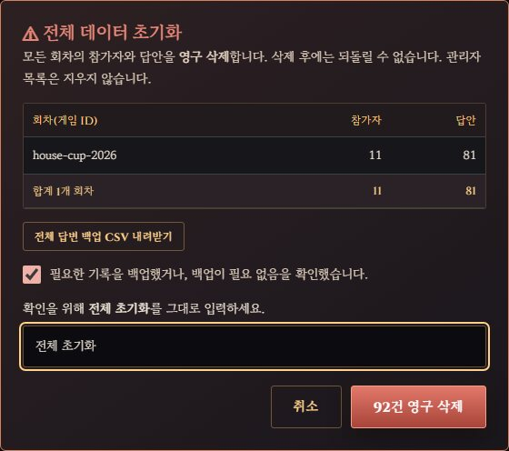
- 지울 양 확인: 회차별 참가자·답안 수와 합계가 표로 나옵니다. 지울 데이터가 없으면 삭제할 수 없습니다.
- 백업 확인: 필요하면 전체 답변 백업 CSV 내려받기로 모든 회차의 답안을 한 파일로 저장한 뒤, “필요한 기록을 백업했거나…” 상자에 체크합니다.
- 문구 입력: 입력칸에 전체 초기화를 띄어쓰기까지 그대로 입력합니다.
- 이제 빨간 ○○건 영구 삭제 버튼이 켜집니다. 누르면 진행 상황이 표시되고, 끝나면 “전체 데이터 ○○건을 삭제했습니다”가 나옵니다. 삭제 중에는 창을 닫을 수 없습니다.
- Check the amount: a table lists players and answers per session, with totals. If there is nothing to delete, the button stays off.
- Confirm a backup: if needed, use 전체 답변 백업 CSV 내려받기 (Download full backup CSV) to save every session’s answers in one file, then tick the box “필요한 기록을 백업했거나…” (I have backed up what I need…).
- Type the phrase: enter 전체 초기화 exactly, including the space.
- The red ○○건 영구 삭제 (Permanently delete ○○ items) button turns on. Progress is shown while it runs, then “전체 데이터 ○○건을 삭제했습니다” (○○ items deleted). The dialog cannot be closed during deletion.
4. 운영 안내4. Running the quiz
회차(게임 ID) 나누기Separate sessions (game ID)
반이나 날짜별로 따로 겨루려면 주소 끝에 ?game=회차ID를 붙여 공유합니다. 회차 ID는 영문 소문자, 숫자, 하이픈으로 40자 이내입니다.
To run classes or days separately, add ?game=session-id to the address you share. Use lowercase letters, digits, and hyphens, up to 40 characters.
| 용도Use | 주소 예시Example address |
|---|---|
| 참가자(1반)Players (class 1) | https://ucanon.com/jmp/hogwarts/?game=class-1 |
| 관리자(1반)Admin (class 1) | https://ucanon.com/jmp/hogwarts/admin.html?game=class-1 |
회차마다 점수와 순위, 기록이 완전히 따로 쌓입니다. 관리자 화면에서는 게임 ID 칸에 입력해 바꿔 볼 수도 있습니다.
Each session keeps completely separate scores, rankings, and records. On the admin screen you can also switch by typing in the game ID box.
행사 전 점검
1. 관리자 화면에 로그인해 초록색 실시간 표시를 확인합니다.
2. 시험용 회차(예: ?game=test)로 한 문제를 풀어 보고 기록에 뜨는지 봅니다.
3. 시험 회차 데이터를 삭제하고, 실제 회차 주소를 준비합니다.
행사 후 정리
1. 확신도 보정 그래프와 문항별 정답률로 수업을 마무리합니다.
2. 두 가지 CSV를 내려받아 보관합니다.
3. 이 게임 데이터 삭제로 이름과 기록을 지웁니다. 학기를 마칠 때는 전체 데이터 초기화로 모두 정리합니다.
Before the session
1. Sign in to the admin screen and check the green 실시간 (Live) indicator.
2. Answer one question in a test session (for example ?game=test) and confirm it appears in the log.
3. Delete the test session’s data and prepare the real session address.
After the session
1. Wrap up the lesson with the calibration chart and accuracy by question.
2. Download both CSV files and keep them.
3. Remove names and records with 이 게임 데이터 삭제. At the end of a term, clear everything with 전체 데이터 초기화.
관리자 추가Adding an admin
Firebase 콘솔(프로젝트 ucanon-hogwarts)의 Firestore에서 admins 컬렉션에 새 관리자의 Google 이메일을 문서 ID로 추가합니다. 필드는 아무것이나 하나 있으면 됩니다. 자세한 절차는 저장소의 docs/setup.md에 있습니다.
In the Firebase console (project ucanon-hogwarts), open Firestore and add a document to the admins collection whose ID is the new admin’s Google email. Any single field is enough. Full steps are in docs/setup.md in the repository.
5. 자주 묻는 질문5. FAQ
‘저장 실패 · 다시 시도’가 떠요.I see “Save failed · Retry”.
인터넷 연결이 잠시 끊긴 경우입니다. 연결을 확인한 뒤 같은 버튼을 다시 누르세요. 앞선 제출이 이미 저장되었다면 서버 기록을 그대로 이어받으므로 점수가 두 번 들어가지 않습니다.
The connection dropped briefly. Check it and press the same button again. If the earlier attempt was already saved, the saved record is used, so points are never counted twice.
화면이 이상하거나 ‘… is not a function’ 같은 오류가 나요.The page looks wrong or shows an error like “… is not a function”.
사이트가 막 업데이트되어 브라우저에 옛 파일이 남은 경우입니다. Ctrl+Shift+R(Mac은 Cmd+Shift+R)로 강력 새로고침을 한 번 하세요. 휴대폰은 브라우저를 완전히 닫았다가 다시 엽니다.
The site was just updated and the browser still has old files. Do a hard reload once with Ctrl+Shift+R (Cmd+Shift+R on a Mac). On a phone, fully close the browser and open it again.
관리자 로그인 창이 열리지 않아요.The admin sign-in window does not open.
팝업 차단 때문입니다. 브라우저에서 이 사이트의 팝업을 허용하거나, 카카오톡·인스타그램 등 앱 안 브라우저가 아니라 Chrome·Safari로 직접 여세요.
A pop-up blocker is stopping it. Allow pop-ups for this site, or open the page directly in Chrome or Safari instead of a browser inside KakaoTalk, Instagram, or similar apps.
한 대의 태블릿을 여러 학생이 돌려 써도 되나요?Can several students share one tablet?
됩니다. 한 학생이 끝나면 로고를 눌러 첫 화면으로 가서 새 참가자로 시작을 누르세요. 앞 학생의 기록은 그대로 남습니다.
Yes. When one student finishes, press the logo to go home and choose Start as a new player. The previous student’s record stays saved.
‘관리자가 이 참가 기록을 삭제했습니다’라고 나와요.I see “This record was removed by the organizer”.
관리자가 그 참가자를 삭제한 경우입니다. 아래의 새 참가자로 시작을 눌러 다시 참여하면 됩니다.
An admin deleted that player. Press Start as a new player below it to join again.
기숙사를 잘못 골랐어요.I chose the wrong House.
기숙사는 바꿀 수 없습니다. 새 참가자로 다시 시작하고, 관리자에게 이전 기록 삭제를 요청하세요.
Houses cannot be changed. Start again as a new player and ask an admin to delete the earlier record.
다른 사람이 내 점수를 바꿀 수 있나요?Can someone else change my score?
없습니다. 각 참가자는 자기 기록에만 답을 추가할 수 있고, 문항 순서대로 한 번씩만 제출됩니다. 점수는 제출한 답과 확신도로만 계산되며, 다른 사람의 답 기록은 관리자만 볼 수 있습니다.
No. Each player can add answers only to their own record, once per question and in order. Scores come only from submitted answers and confidence, and only admins can see other players’ answers.